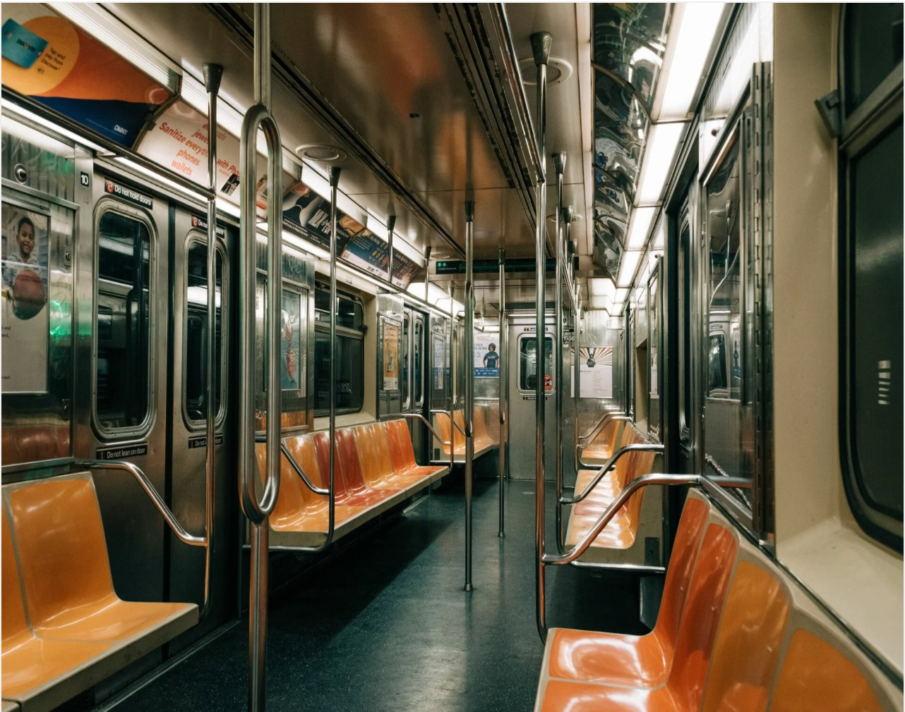
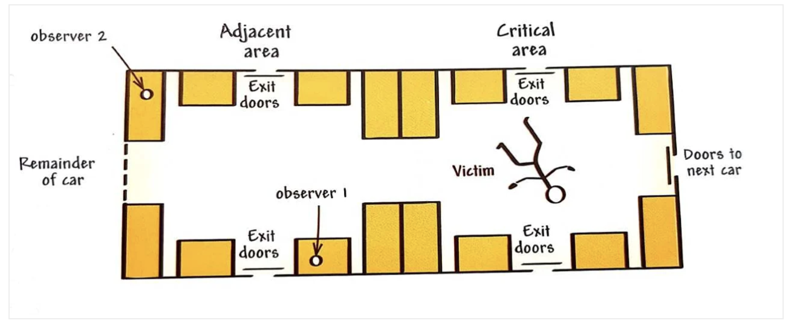

🚇 Piliavin et al. (1969)
（地铁撒玛利亚人实验）
1️⃣ Background（研究背景）
The psychology being investigated: Social psychologists have long studied the role of bystanders in emergency situations. A key trigger for research into bystander apathy was the murder of a young woman called Kitty Genovese in New York City in 1964.
📖 The Kitty Genovese Case (1964) — A pivotal event that sparked bystander intervention research.
After returning from work during the early hours of the morning, Kitty Genovese was followed and attacked by a man near her home. One witness had called down to warn off her attacker as she screamed that she was being stabbed. Her attacker was scared off but returned to continue the assault. It was alleged in news reports that around 38 individuals living nearby either saw or heard what happened, but failed to prevent her murder.
⚠️ Note: Later investigations revealed the "38 witnesses" figure may have been exaggerated, but the case nonetheless triggered intense research interest into why people don't help.
Two key explanations for bystander apathy
① Diffusion of Responsibility
Proposed by Darley & Latané (1968). When others are present, individuals feel reduced personal responsibility ("someone else will help"), making them less likely to act.
⚠️ Piliavin's results do NOT support this hypothesis!
② Modelling
If people observe someone else helping a victim, they become more likely to help themselves. Bryan & Test (1967) found that individuals who had just witnessed prosocial behaviour were more likely to act prosocially themselves.
Why a field experiment?
Piliavin et al. wanted to test these ideas in a naturalistic setting rather than a laboratory. Previous lab studies on bystander apathy (like Darley & Latané's epilepsy seizure experiment) used situations where bystanders could only hear the emergency but not see it. Piliavin wanted to know: would the same patterns hold when people can actually see the victim?
逻辑链：Kitty Genovese 谋杀案（1964）→ 38个目击者无人帮忙 → 引发社会心理学家研究 Bystander Apathy（旁观者冷漠） → 提出两个解释理论 → 需要实验验证。
- Diffusion of Responsibility（责任分散）：人在群体中会感觉个人责任感降低（"别人会帮"）。⚠️ Piliavin 结果不支持此理论！
- Modelling（示范效应）：看到别人帮忙 → 自己也更可能帮忙（社会学习）。
- Field Experiment（现场实验）：比实验室更真实，能观察到人们"看到"紧急情况时的反应。
💡 考试要点：CIE 常考 "outline two explanations for bystander apathy"。答案：(1) Diffusion of responsibility; (2) Modelling/pluralistic ignorance。
- Kitty Genovese case (1964) triggered research into bystander behaviour Must Know
- Two explanations: Diffusion of responsibility vs. Modelling Must Know
- Piliavin's study does NOT support diffusion of responsibility Critical!
- Field experiment advantage: higher ecological validity than lab studies AO2 Gold
- AO2 link: Why naturalistic settings matter for studying helping behaviour AO2 Gold
2️⃣ Aim（研究目的）
The researchers aimed to study bystander apathy and diffusion of responsibility in a natural setting. Piliavin et al. also wanted to investigate the effect of four variables on helping behaviour or being a 'Good Samaritan' (someone who helps a stranger in need):
- the type of victim — drunk or ill (with cane)
- the race of the victim — black or white
- the behaviour of a 'model' — early help, late help, adjacent area help, or no model
- the size of the group of bystanders
逻辑链：研究旁观者冷漠 → 需要测试哪些因素影响帮助行为 → 提出4个 Independent Variables (IVs)（自变量） → 在真实地铁环境中操纵这些变量。
- Type of Victim（受害者类型）：Drunk（醉酒）vs Ill/Cane（生病/拄拐）→ 测试"是否值得帮"。
- Race of Victim（种族）：Black vs White → 测试种族偏见。
- Model Behaviour（模特行为）：Early/Late help, Critical/Adjacent area, No model → 测试示范效应。
- Group Size（群体大小） → 测试责任分散假设。
💡 考试要点：CIE 常考 "outline one aim of the study"。答案模板：To investigate the effect of [variable] on helping behaviour/bystander intervention in a naturalistic setting。
- Four IVs: victim type, victim race, model behaviour, group size Must Know
- DV: helping behaviour (time to help, who helps, frequency) Common Q
- Term: Good Samaritan = someone who helps a stranger in need Context
- Aim template: "To investigate factors affecting bystander intervention" AO2 Gold
3️⃣ Method（研究方法）
Research method and design
This study was a field experiment. This means it took place in a realistic environment — in this case, the New York City subway. The study used an independent groups design: the trials were repeated on different days and involved different participants in each condition.
Four independent variables (IVs) were operationalised as:
| IV | Levels | Operationalisation |
|---|---|---|
| Type of victim | 'Drunk' or 'Ill' (cane) | Victim smelled of alcohol + carried bottle in brown bag (drunk), OR carried black cane & appeared sober (cane) |
| Race of victim | Black or White | 3 white victims + 1 black victim (all dressed identically) |
| Model behaviour | 5 conditions | Critical area/early, Critical area/late, Adjacent area/early, Adjacent area/late, No model |
| Group size | Naturally occurring | Number of passengers present in the subway carriage |
The dependent variable (DV) was operationalised as the time taken for the first passenger to help, as well as the total number of passengers who helped. The race, gender and location of each helper were also recorded. Qualitative data was recorded in the form of verbal remarks made by passengers during each incident.
Sample
This study took place on the New York City subway. Participants were passengers travelling on an underground railway service between Harlem and the Bronx (areas of New York City) on weekdays between 11 a.m. and 3 p.m. We might call this an opportunity sample — passengers were not deliberately selected for participation.
| Metric | Value |
|---|---|
| Total estimated participants | ≈ 4,450 people across 103 trials |
| Racial composition | ≈ 45% Black, ≈ 55% White |
| Mean number per carriage | 43 passengers |
| Mean in critical area | 8.5 passengers |
| Date range | April 15 – June 26, 1968 |
💡 Why the NYC Subway?
- A and D express trains make no stops between 59th St → 125th St (~7.5 minutes) → passengers are a "captive audience"
- Route passes through Harlem to Bronx → racially diverse passengers → allows testing race variable
- Old-style carriages had two seating groups (not continuous rows) → clear critical area and adjacent area zones
逻辑链：要在真实环境中测试旁观者行为 → 选择 Field Experiment（现场实验） → 在纽约地铁进行（高生态效度）→ 使用 Independent Groups Design（独立组设计） → 操纵4个IVs → 测量DV。
- Field Experiment：真实环境 + 操纵IV + 测量DV，生态效度高但额外变量难控。
- Operationalisation（操作化）：把抽象概念变成可测量的具体操作。如"帮助" = "从倒地到第一个人帮忙的秒数"。
- Opportunity Sample（机会抽样）：≈4,450名乘客，45% Black + 55% White。
- DV（因变量）：时间（秒）、帮助人数、帮助者种族/性别/位置、乘客的口头评论（定性数据）。
💡 考试要点：CIE 常考 "outline the method used"。答案要点：Field experiment, IVs (victim type/race/model/group size), DV (time to help/frequency), sample (opportunity, ~4450 people), setting (NYC subway)。
- Field experiment in NYC subway (high ecological validity) Must Know
- Independent groups design (different participants each trial) Must Know
- 4 IVs: victim type, race, model behaviour, group size Common Q
- DV: time to help, number of helpers, helper characteristics Must Know
- Sample: opportunity sample, ≈4,450 passengers, 103 trials AO2 Gold
- AO3: Strength — high ecological validity; Weakness — lack of control over EVs AO2 Gold
4️⃣ Procedure（实验程序）
Four teams of student researchers carried out the study using a standard procedure. On each trial, two male and two female students boarded the train using different doors. The female confederates sat in the area adjacent to the immediate 'critical' where the incident took place. They observed the passengers and recorded data during each trial. The male confederates took the roles of the victim and the model. The victim stood at the pole in the centre of the critical area, and the model remained standing throughout the trial.


Standard procedure (each trial):
- Team members boarded through different doors (to avoid being recognised as a group)
- Female observers sat outside the critical area, recording data unobtrusively (passenger race, gender, location, comments)
- Male victim + model stood inside or near the critical area
- About 70 seconds after the train left the first station, the victim staggered forward and collapsed
- The victim remained supine, looking at the ceiling
- If no one helped → the model raised him to a sitting position as the train slowed down
- At the station, all team members disembarked separately and reassembled at another platform after other passengers had left
- 6–8 trials per day; all trials on the same day used the same "victim condition"
Victim details:
- 4 victims (1 per team), aged 26–35; 3 White + 1 Black
- All wore identical clothing: Eisenhower jacket, old trousers, no tie
- Cane condition (65 trials): Sober appearance, carrying a black cane
- Drunk condition (38 trials): Smelled of alcohol, carried bottle wrapped in brown paper bag
- Each victim participated in both conditions across different days
Model details:
- 4 White males, aged 24–29
- Dressed casually but not identically (to look like ordinary passengers)
Five model conditions:
| Condition | Model location | When model helps |
|---|---|---|
| Critical / early | Stood in critical area | Waited ~70 seconds after collapse |
| Critical / late | Stood in critical area | Waited ~150 seconds after collapse |
| Adjacent / early | Stood in adjacent area | Waited ~70 seconds |
| Adjacent / late | Stood in adjacent area | Waited ~150 seconds |
| No model | Model did not help until train reached next stop | |
💡 Why early vs. late model? Researchers wanted to test the time window for modelling effects. Would an early helper (70s) be more influential than a late one (150s)? Result: Early models triggered more helping; late models had almost no effect — because most willing helpers had already acted within 70 seconds.
Why critical vs. adjacent area? To test whether distance from victim mattered. Result: Location was not significant (area variable has no effect); what mattered was whether the model acted promptly.
逻辑链：制定标准化程序 → 确保每次试验一致 → 4人一队（victim + model + 2 observers）→ 在地铁快车上执行 → 记录数据。
- Standardised Procedure（标准化程序）：每队4人，victim 倒地后保持躺姿，observers 记录时间/行为。
- Victim Conditions（受害者条件）：Cane（生病，95%帮助率）vs Drunk（醉酒，50%帮助率）。
- Model Conditions（模特条件）：5种（Critical/Adjacent × Early/Late + No model）→ 测试示范效应。
- Critical Area vs Adjacent Area：距离变量无显著影响，关键是模特是否及时帮忙。
💡 考试要点：CIE 常考 "outline the procedure"。答案要点：Team of 4, victim collapses, standardised behaviour, 5 model conditions, observers record data, 103 trials total。
- Standardised team procedure (victim + model + 2 observers) Must Know
- 5 model conditions: Critical/Adjacent area × Early/Late timing + No model Common Q
- Victim remained supine until helped or train slowed down Context
- 103 trials total: 65 cane condition + 38 drunk condition Must Know
- Early model (~70s) more effective than late model (~150s) AO2 Gold
5️⃣ Results（研究结果）
Overall helping rate（总体帮助率）
Overall, the frequency of helping recorded in this study was much higher than had previously been reported in laboratory studies. Seventy-eight percent of victims received spontaneous help (i.e., helped before model intervened or in a no-model condition). In 60% of cases more than one person helped!
🎯 Key Findings at a Glance
- Overall spontaneous helping rate: 78% (much higher than lab studies ~30-40%)
- Cane (ill) victim: 62/65 trials received help = 95%
- Drunk victim: 19/38 trials received help = 50%
- In 60% of trials, more than one person helped
- 90% of first helpers were male (while males were only 60% of the general population)
Effect of type of victim
In terms of the type of victim, participants were more likely to help the victim with the cane than the drunk victim. The cane victim received help in 62/65 trials; the drunk victim received help in 19/38 trials. In the drunk trials, spontaneous helping also occurred earlier than in the cane trials. For example, in all but three of the cane trials that were also model trials, helping occurred before the model could give assistance.
| Trial | White victim | Black victim | ||
|---|---|---|---|---|
| Cane | Drunk | Cane | Drunk | |
| No model | 100% | 100% | 100% | 73% |
| Model trial | 100% | 77% | —* | 67% |
*No model trials for the black 'victim' were run for the cane condition (all cane trials received help before model intervention)
① People perceive drunk victims as partly responsible for their condition (perceived responsibility hypothesis) → reduced sympathy → lower willingness to help
② Drunk individuals may be seen as disgusting, embarrassing, or potentially violent → the "cost" of helping is perceived as too high
Effect of race
In terms of race, both black and white cane victims were equally likely to receive help. However, there was some evidence of same-race helping in the drunk condition, with participants being more likely to help those of their own race overall. Although these results were not statistically significant, they support research suggesting people are more likely to help those similar to themselves.
When the victim is drunk (and potentially dangerous), complications are present — probably blame, fear, and disgust. When the victim is a member of one's own group, the conditions for empathy and trust are more favourable — assistance is more likely to be offered.
Effect of gender of helper
The result relating to the variable of sex was that the majority of helpers (90%) were male. Female passengers made comments such as "It's for men to help him" or "I wish I could help him — I'm not strong enough". This may suggest a difference between men and women in terms of bystander helping behaviour, or it may be a result of the victim always being played by a male.
Effect of modelling
The effect of modelling was difficult to analyse because most of the helping that occurred was spontaneous. However, it appeared that early model intervention at 70 seconds was slightly more likely to result in helping behaviour than waiting until 150 seconds had passed.
Diffusion of responsibility — NOT FOUND!
⚠️ Critical Exam Finding: No diffusion of responsibility effect!
Surprisingly and in contrast to previous research, this study found no evidence to support the diffusion of responsibility hypothesis. In fact, there was some evidence to suggest that when passengers were present, rates of helping were actually slightly higher.
Looking at the graph below, we can see that the hypothetical speed of response for seven-person groups, as predicted by diffusion of responsibility theory, is slower than for three-person groups. But the natural seven-person groups responded FASTER than predicted, and faster even than the three-person groups! This directly opposes the prediction of diffusion of responsibility.
💡 Why no diffusion of responsibility on the subway? (Three explanations)
- Visual cues: Passengers could directly see each other and the victim — cannot use "someone else probably already helped" as an excuse for inaction
- No escape: The subway carriage is an enclosed space; passengers cannot walk away and must confront the situation
- Public accountability: Everyone can see whether you help or not — social pressure to act prosocially
Data from Table 5: In cane conditions, groups of 7+ males in critical area had median response time of only 1.5 seconds; groups with only 1-3 males took 7 seconds! (Kruskal-Wallis H = 5.08, p = .08) Though marginally significant, the trend is clear: larger groups responded FASTER.
Other responses
- Left critical area: Across all trials, 34 people left the critical area. More left in drunk condition (42%) vs. cane (5%)
- Increased commenting: Drunk trials + late-helping trials → more passenger comments (e.g., "It's for men to help him", "I wish I could help him — I'm not strong enough")
- No one completely left the train car on any trial
逻辑链：总体帮助率高达78%（远超实验室研究）→ Cane(95%) > Drunk(50%) → 种族影响不显著 → 90%帮助者是男性 → 示范效应有限（early > late）→ ⚠️ 最重要发现：没有责任分散效应！
- Victim Type Effect（受害者类型效应）：Cane 95% vs Drunk 50% → 人们认为醉酒者要为自己的处境负责（perceived responsibility）+ 害怕醉酒者危险。
- Race Effect（种族效应）：Cane 条件下无种族差异；Drunk 条件下有微弱的同种族帮助倾向（不显著）。
- Gender Effect（性别效应）：90%第一帮助者是男性（人群中男性仅60%）。
- No Diffusion of Responsibility（无责任分散）：考试超级重点！人多反而反应更快！原因：(1) 视觉线索无法否认 (2) 无法逃避封闭空间 (3) 公共场合面子压力。
💡 考试要点：CIE 必考 "outline the results"。必须记住：78%总体帮助率、Cane 95% vs Drunk 50%、无责任分散效应、90%男性帮助者。
- Overall helping rate: 78% (much higher than lab studies ~30-40%) Must Know
- Cane victim: 95% helped (62/65 trials); Drunk victim: 50% helped (19/38) Must Know
- 90% of first helpers were male (males = only 60% of passengers) Common Q
- No diffusion of responsibility found! Larger groups responded FASTER Critical!
- Early model (~70s) more effective than late model (~150s) AO2 Gold
- Race: minimal effect for cane; slight same-race preference for drunk (not significant) Context
6️⃣ Cost-Benefit Model（成本-收益模型）
Piliavin et al. proposed a model of response to an emergency situation as an alternative to the diffusion of responsibility hypothesis to explain the findings of this study. This is termed the cost-benefit model.
Note: This model's motivation is not "altruism" but rather a selfish desire to rid oneself of an unpleasant emotional state.
This heightened arousal level prompts individuals to respond to the situation, in order to reduce any difficult feelings. The cost-benefit model can explain the findings that a higher number of comments were made during trials with a drunk victim. Observers noted that in around 20% of trials, passengers actively moved away from the critical area where the incident was taking place. So although less helping occurred due to disgust, the participants prompted them to comment or move away instead.
Explaining findings via Cost-Benefit Model:
| Finding | Explanation via Cost-Benefit |
|---|---|
| Drunk 得到的帮助少 | Helping costs higher (disgust); not-helping costs lower (he's partly responsible) |
| 女性帮忙少 | Helping costs higher (physical effort); not-helping costs lower ("not my role") |
| 同种族帮助（尤其drunk时） | Differential costs: less censure if opposite race; more fear if different race |
| 无责任分散（cane trials） | Helping costs are LOW; not-helping costs are HIGH (self-blame) |
| 时间越久→离开越多 | Arousal increases → must find a way to reduce it (leave = one option) |
逻辑链：目睹紧急情况 → 引发情绪唤醒（arousal）→ 个体通过成本-收益分析决定如何降低不适感 → 可能选择帮忙/离开/评论/合理化。
- Arousal（情绪唤醒）：恐惧、厌恶、同情、内疚等混合情绪 → 必须消除这种不适感。
- Cost-Benefit Analysis（成本收益分析）：不是利他主义，而是自私地想让自己舒服。
- Explaining Findings（解释发现）：Drunk 帮助少（成本高：厌恶+他认为该负责）；女性帮忙少（成本高：体力+角色期望）；无责任分散（cane 条件下不帮忙的成本极高：自责）。
💡 考试要点：CIE 常考 "explain the cost-benefit model"。答案要点：Arousal → costs (effort, disgust, embarrassment) vs benefits (praise, self-satisfaction) → decision to help/not help/leave/comment。
- Arousal theory: emergency triggers emotional arousal that must be reduced Must Know
- Costs of helping: effort, physical danger, disgust, embarrassment Common Q
- Benefits of helping: social approval, self-satisfaction, avoiding guilt Context
- Explains why drunk victims helped less (higher costs, lower blame if don't help) Must Know
- Explains no diffusion of responsibility for cane victims (not-helping cost = high self-blame) AO2 Gold
- Alternative to diffusion of responsibility; more comprehensive explanation AO2 Gold
7️⃣ Conclusions（结论）
This study found that in a natural setting, many people would offer spontaneous help to a stranger, even in a group situation. This study found no evidence of diffusion of responsibility, but did identify several factors which influence an individual's decision to help:
- The type of victim — someone using a cane will be helped more than a drunk person
- The gender of the helper — men are more likely to help than women
- The similarity of the victim to the helper — people may be more likely to help members of their own race, especially if the victim is drunk
- The duration of the emergency — the longer an emergency continues, the less likely that anyone will help, and the more likely it is they will find another way of coping with arousal (leaving, commenting)
逻辑链：自然环境中人们愿意帮忙（78%）→ 无责任分散效应 → 帮助行为受以下因素影响：
- Victim Type（受害者类型）：Cane > Drunk（95% vs 50%）。
- Helper Gender（帮助者性别）：男性 > 女性（90% vs 10%）。
- Similarity（相似性）：同种族帮助倾向（尤其drunk时）。
- Duration（持续时间）：越久越不可能帮忙，更可能选择离开或评论。
💡 考试要点：CIE 常考 "outline two conclusions"。答案模板：(1) No diffusion of responsibility in natural settings; (2) Victim type is strongest predictor of helping; (3) Men more likely to help than women.
- No evidence for diffusion of responsibility in natural settings Critical!
- Victim type: cane victims helped significantly more than drunk victims Must Know
- Gender: men are more likely to help than women (90% male helpers) Common Q
- Similarity: slight same-race preference, especially for drunk victims Context
- Duration: longer emergencies → less helping, more leaving/commenting AO2 Gold
8️⃣ Strengths and Weaknesses（优缺点）
Strengths（优点）
- High ecological validity — Field experiment in a real subway setting; participants were ordinary commuters who would have behaved naturally. They believed the emergency situation was real.
- Large sample — Around 4,500 individuals participated across 103 trials, making results more reliable and generalisable.
- Quantitative + Qualitative data — Both numerical measurements (latency, frequency) and verbal comments were recorded, allowing deeper understanding of thoughts and behaviours.
- Standardised procedure — Even though it was a field experiment, there was good standardisation between trials: victim always dressed identically, same collapse timing, same route.
- Two observers — Increased reliability of data collection through inter-rater agreement potential.
- Testing a real-world theory — Directly challenged the lab-based diffusion of responsibility finding in a natural environment.
Weaknesses（缺点）
- Ethical issues — No informed consent; participants deceived (thought victim really collapsed); may have caused psychological distress/guilt about not helping.
- Lack of control over extraneous variables — Weather, time of day, train delays could affect participants' behaviour, lowering internal validity and reliability.
- Demand characteristics — Participants might behave differently knowing they're part of an "experiment" (though they didn't know).
- Only one trial per participant — Cannot use repeated measures design; individual differences not controlled.
- Sample not representative — Only NYC subway passengers; cannot generalise to other countries/cultures.
- Only one Black victim — Limits conclusions about race effects (acknowledged by researchers themselves).
- Team 2 violated protocol — Ran wrong condition on day 4 because victim "didn't like" playing drunk; introduces confounding variable.
逻辑链：评估研究质量 → 优点（生态效度高、大样本、混合数据）→ 缺点（伦理问题、额外变量难控、样本代表性有限）。
- Strengths（优点）：High EV（真实地铁）、Large sample（~4,450人）、Mixed methods（定量+定性）、Standardised procedure（标准化）、Two observers（提高信度）、Challenged existing theory（挑战责任分散理论）。
- Weaknesses（缺点）：Ethical issues（无知情同意+欺骗）、Lack of control（EVs如天气/时间）、Demand characteristics（可能察觉实验）、Only one trial per participant（无法用重复测量）、Sample bias（仅NYC地铁）、Only one Black victim（种族结论受限）、Protocol violation（Team 2违规）。
💡 考试要点：CIE 常考 "evaluate the method"。答案模板：Strength (high EV, large sample, mixed data) + Weakness (ethical issues, lack of control, sample bias) + Overall judgement (valuable despite limitations)。
- High ecological validity (real subway setting) Must Know
- Large sample (~4,450 participants, 103 trials) increases reliability Common Q
- Mixed methods: quantitative (latency) + qualitative (comments) AO2 Gold
- Ethical issues: no informed consent, deception, potential distress Must Know
- Lack of control over extraneous variables (weather, time, delays) AO2 Gold
- Sample not representative (only NYC subway passengers) Context
9️⃣ Ethical Issues（伦理问题）
🔴 主要伦理问题
- No informed consent（无知情同意） — 参与者不知道自己在参与研究，也没有同意参加
- Deception（欺骗） — 参与者以为受害者真的晕倒了，实际上是被骗的
- Psychological harm（心理伤害） — 参与者可能因为没有帮忙而感到内疚或焦虑（guilt about not helping or concern about the well-being of the victim）
- No debriefing（无事后解释） — 实验结束后没有向参与者说明真相
Participants in this study were not aware they were taking part in research. This means they did not give their informed consent to participate. Why might this be an ethical issue, and how could it be overcome?
Today, such a study would need approval from an ethics committee before being conducted. Possible improvements: obtain general consent via station announcements, debrief participants at the next stop, screen out vulnerable individuals, minimize duration of distress.
逻辑链：现场实验的伦理困境 → 无法获得知情同意（否则破坏真实性）→ 欺骗参与者 → 可能造成心理伤害 → 无事后解释。
- No Informed Consent（无知情同意）：参与者不知道自己在参与研究。现场实验的固有矛盾：知情同意会降低生态效度。
- Deception（欺骗）：受害者假装晕倒，参与者信以为真。
- Psychological Harm（心理伤害）：参与者可能因没帮忙而感到内疚或焦虑。
- No Debriefing（无事后解释）：实验后未向参与者说明真相。
💡 考试要点：CIE 常考 "discuss ethical issues"。答案模板：(1) No informed consent (justified by need for realism); (2) Deception (necessary for natural behaviour); (3) Potential psychological harm (guilt/anxiety); (4) Improvements today (ethics committee approval, debriefing at next stop)。
- No informed consent — participants unaware they were in a study Must Know
- Deception — victims faked collapse; participants believed it was real Must Know
- Potential psychological harm — guilt about not helping, anxiety for victim Common Q
- No debriefing — participants never told the truth Context
- Justification: need for ecological validity and natural behaviour AO2 Gold
- Modern improvements: ethics committee approval, debrief at next stop AO2 Gold
🔟 Issues, Debates and Approaches（议题、争论与研究取向）
Individual vs Situational Explanations（个体 vs 情境解释）
Piliavin et al.'s study tells us about specific situational factors which may make subway passengers more or less likely to help a man who had collapsed on a train. Quantitative measurements showed that victims who were ill were more likely to receive help than those who appeared drunk, and that the number of bystanders does not affect the amount of bystander helping. The findings suggest that diffusion of responsibility is not typical of bystander helping in natural environments.
💡 Social Approach 的核心主题：情境 vs 个体
社会心理学取向的核心争论之一：我们的行为更多由外部情境决定，还是由内在特质决定？
- Milgram → 强调情境因素（权威合法性、命令形式）
- Perry → 两者都重要（情境：关系类型；个体：共情能力）
- Piliavin → 情境因素为主（受害者类型、紧急持续时间），但也涉及个体差异（性别、种族偏好）
Practical applications of Piliavin（实际应用）
- 培训急救人员了解什么类型的受害者更容易/更不容易得到帮助
- 公共场所安全设计：确保紧急情况下人们容易注意到受害者（视觉线索的重要性）
- 反霸凌项目：理解为什么人群中有时无人制止霸凌（成本-收益分析）
逻辑链：Social Approach 的核心争论 → 行为由情境还是个体决定？→ Piliavin 支持情境因素为主（受害者类型、持续时间）→ 但也涉及个体差异（性别、种族偏好）。
- Situational Factors（情境因素）：受害者类型（cane > drunk）、紧急持续时间（越久越少帮）、示范效应（early model 有效）。
- Individual Differences（个体差异）：男性更可能帮忙（90%）、微弱的同种族偏好。
- Practical Applications（实际应用）：急救培训、公共场所安全设计、反霸凌项目。
💡 考试要点：CIE 常考 "discuss the individual-situational debate"。答案模板：Piliavin supports situational explanation (victim type, duration most important) but also acknowledges individual differences (gender, race). Compare with Milgram (situational) and Perry (both).
- Supports situational explanation: victim type & duration are strongest predictors Must Know
- But individual differences matter: gender (90% male helpers), slight racial preference Common Q
- No diffusion of responsibility → challenges lab-based findings AO2 Gold
- Practical applications: first aid training, public safety design, anti-bullying programs Context
- Compare with Milgram (situational) and Perry (interactionist) AO2 Gold
1️⃣1️⃣ Summary（总结）
Piliavin et al.'s study considered different factors which affect bystander behaviour. It looked at how specific circumstances might make subway passengers more or less likely to help a man who had collapsed on a train. This is a field experiment involving a large number of participants. Quantitative measurements showed that victims who ill were more likely to receive help than those who appeared drunk, and that the number of bystanders does not affect the amount of bystander helping. The findings suggest that diffusion of responsibility is not typical of bystander helping in natural environments.
一句话总结：Piliavin 的现场实验发现，在真实环境中人们愿意帮忙（78%），没有责任分散效应，帮助行为主要受受害者类型（cane > drunk）和情境因素影响，而非群体大小。
- Key Finding 1：78% 自发帮助率，远高于实验室研究。
- Key Finding 2：Cane 95% vs Drunk 50% → 受害者类型是最强预测因子。
- Key Finding 3：无责任分散！人多反而反应更快。
- Field experiment with large sample (~4,450 passengers) Must Know
- Ill victims helped more than drunk victims (95% vs 50%) Must Know
- No diffusion of responsibility found — contradicts lab studies Critical!
- Situational factors > individual factors in predicting helping Common Q
1️⃣2️⃣ Exam-Style Questions（模拟考题）
Model Answer:
- The victim's appearance was standardised — The same actor played both the drunk and ill conditions, wearing identical clothing (grey jacket, black trousers). Only the facial expression and presence of a cane differed between conditions.
- The timing of collapse was standardised — The victim collapsed at exactly the same point in the journey (70 seconds after leaving one station) in every trial, ensuring all participants experienced the same duration before the emergency.
💡 Other acceptable answers: same subway carriage used; same route (59th→125th St); model helpers followed a script.
a) Describe what is meant by 'diffusion of responsibility'.
b) Explain whether the results support or contradict this hypothesis.
a) Definition [4 marks]:
Diffusion of responsibility refers to the phenomenon where individuals feel less personal responsibility to take action when other people are present. The assumption is that responsibility is "spread" or "diffused" among all bystanders, so each person feels less compelled to help, assuming someone else will intervene.
b) Evaluation [3 marks]:
Piliavin's results contradict / do NOT support the diffusion of responsibility hypothesis. The study found that helping was faster in larger groups, and there was no relationship between group size and helping rate. If diffusion of responsibility were operating, we would expect less and slower helping in larger groups — but this was not observed. Instead, victim condition (drunk vs. cane) was the strongest predictor of helping behaviour.
⚠️ This is a critical finding for CIE exams! Many students incorrectly assume diffusion of responsibility was supported.
Strength [2 marks]:
High ecological validity — The study took place in a real NYC subway with genuine passengers who were unaware they were being observed. This means the findings reflect how people actually behave in real emergency situations, unlike artificial lab settings where participants know they're being studied.
Weakness [2 marks]:
Lack of control over extraneous variables — In a natural setting, the researchers could not control factors such as passengers' prior experiences, mood, cultural background, or personal characteristics. This makes it difficult to establish a clear cause-and-effect relationship and reduces internal validity. Additionally, there were ethical issues such as lack of informed consent and psychological distress caused to passengers.
Strength 1: High ecological validity — Real-world setting with unaware participants → findings generalisable to actual bystander situations. [+EV]
Strength 2: Large sample size — Approximately 4,450 passengers across 103 trials provides substantial quantitative data and increases reliability of findings. [+Reliability]
Weakness 1: Ethical issues — Participants did not give informed consent; some passengers may have experienced genuine distress believing someone was seriously ill; debriefing was not possible. [−Ethics]
Weakness 2: Lack of control — Extraneous variables (passenger demographics, individual differences) could not be controlled, potentially confounding results. Team 2 also violated protocol on day 4. [−IV]
💡 Tip for 6-mark questions: Always use "PEEL" — Point, Evidence, Explanation, Link. Reference specific findings (e.g., "78% helping rate", "103 trials").
Model Answer:
A field experiment is a research method where the independent variable (IV) is manipulated and the dependent variable (DV) is measured in a naturalistic, real-world setting, rather than in an artificial laboratory environment. Participants are often unaware they are being studied (covert observation), which increases ecological validity but reduces control over extraneous variables.
💡 Keywords to include: IV manipulated, natural setting, high EV, unaware participants, real-life context.
Ethical Issue [2 marks]:
Lack of informed consent — Passengers on the subway train did not know they were participating in a psychological study and had not given their permission to be observed or recorded. Some may have experienced genuine worry or distress upon seeing someone collapse.
(Alternative acceptable answers: Psychological harm/distress to participants; No right to withdraw; No debriefing)
How to overcome [2 marks]:
Researchers could obtain general presumptive consent by posting notices at stations explaining that a study may be conducted and passengers may be observed (though this would reduce realism). Alternatively, conduct a
逻辑链：CIE 考试常见题型 → AO1（描述/概述）+ AO2/AO3（解释/评价）→ 必须用研究中的具体证据支持答案。
- Q1 [4m] Standardisation：描述2个标准化程序（如：victim 着装相同、collapse 时间相同）。
- Q2 [4+3m] Diffusion of Responsibility：(a) 定义 (b) Piliavin 结果不支持此假设。
- Q3 [4m] Field Experiment：1个优点（高EV）+ 1个缺点（伦理问题/EVs难控）。
- Q4 [6m] Evaluation：2个优点 + 2个缺点，必须联系具体研究发现。
- Q5 [2m] Definition：定义 field experiment。
- Q6 [4m] Ethics：1个伦理问题 + 1个改进建议。
- Q1: Standardised procedure examples (clothing, timing, route) Common Q
- Q2: Define diffusion of responsibility; results contradict it Must Know
- Q3: Field experiment strength (high EV) and weakness (ethics/control) Must Know
- Q4: 6-mark evaluation: balance strengths and weaknesses with evidence AO2 Gold
- Always use specific findings from the study to support answers! AO2 Gold
1️⃣3️⃣ Key Terms（核心术语表）
| Term | Definition（定义） |
|---|---|
| Bystander | A person who is present but not directly involved in a situation（在场但未直接参与的人） |
| Bystander apathy | When a bystander does not show concern for a person in need（旁观者冷漠/旁观者效应） |
| Diffusion of responsibility | When there are other people available to help, an individual may feel reduced sense of personal responsibility（责任分散） |
| Modelling | When we watch a person (model) perform the desired behaviour, e.g. helping behavior（模仿学习/示范） |
| Good Samaritan | Someone who offers help to others experiencing difficulty（好撒玛利亚人 = 助人为乐者） |
| Field experiment | Study in everyday locations with IV manipulation and DV measurement（现场实验） |
| Independent groups design | Different Ps in each condition（独立组设计 / 被试间设计） |
| Opportunity sample | Ps selected because they happen to be available（机会抽样） |
| Operationalisation | Defining abstract concepts in measurable terms（操作化） |
| Cost-benefit model | Decision-making process weighing pros and cons of helping（成本-收益模型） |
| Confederate | A fake participant who is actually part of the research team（假被试/同盟者） |
| Critical area | The section of the subway car where the incident was staged（核心区域） |
| Ecological validity | How well findings apply to real-life settings（生态效度） |
| Extraneous variables | Unwanted variables that might affect results（额外/混淆变量） |
| Informed consent | Participants agree to take part knowing what the study involves（知情同意） |
| Debriefing | Explaining the true purpose after the study ends（事后解释/简报） |
逻辑链：CIE 考试要求掌握核心术语的准确定义 → 这些术语是答题的基础 → 必须能用英文定义 + 中文解释。
- Tier 1 — 必考术语（必须能默写定义）：Bystander apathy, Diffusion of responsibility, Field experiment, Ecological validity, Informed consent。
- Tier 2 — 重要术语（常出现在题目中）：Modelling, Good Samaritan, Independent groups design, Operationalisation, Cost-benefit model, Confederate。
- Tier 3 — 辅助术语（帮助理解）：Opportunity sample, Critical area, Extraneous variables, Debriefing。
💡 考试技巧：看到 "outline" 题型时，先写术语定义（得1分），再结合 Piliavin 的具体例子展开（得剩余分数）。
- 17 key terms to memorise for CIE exam Must Know
- Must be able to define in English + explain in Chinese Common Q
- Top 5 most tested: Bystander apathy, Diffusion of responsibility, Field experiment, EV, Informed consent Must Know
- Exam technique: define term first (1 mark), then give example from Piliavin (remaining marks) AO2 Gold